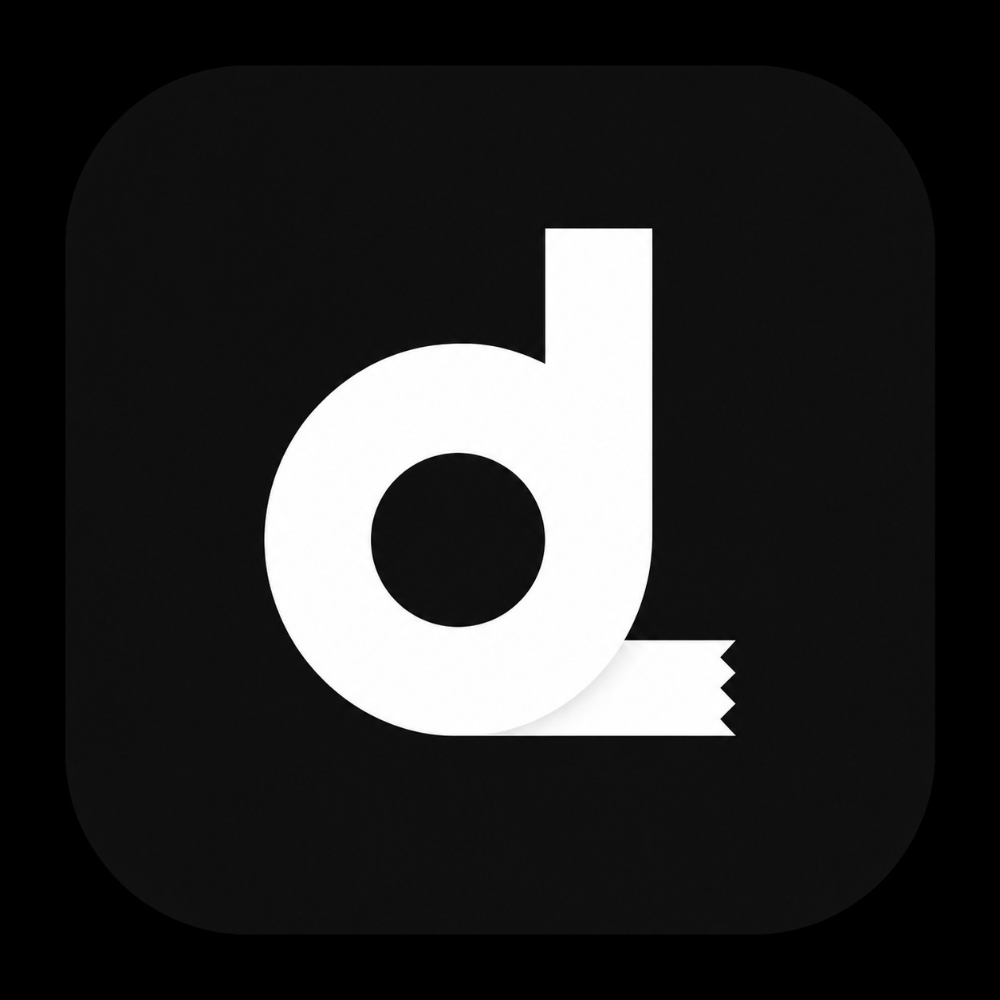
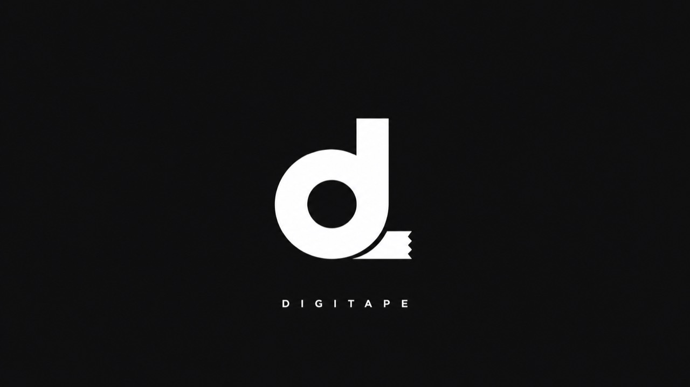

Readable at a glance
OLED and touch-screen receiver builds keep distance, battery, signal, and mode state visible without a laptop in the loop.

DigiTape
Receiver, tag, firmware, app
OLED and touch-screen receiver builds keep distance, battery, signal, and mode state visible without a laptop in the loop.
Small tag modules are designed for quick mounting, wireless ranging, and repeatable testing across camera and subject setups.
The firmware path is planned around named boards, stable channels, and over-the-air releases as the project grows.
Firmware features
Designed around swappable distance inputs, including HC-SR04 ultrasonic, Garmin LIDAR-Lite, TF-Luna style LiDAR, and wireless TAG packets.
Store focus marks, define active distance limits, and create lockout zones so noisy or unwanted ranges do not interrupt the working readout.
Dial in offsets, switch between fast/default/smoothed response behavior, and keep source-specific tag offsets for different camera or target setups.
Use receiver, transmitter, mini RX, and tag roles with route switching between direct hardware reads and wireless ranging workflows.
Track link state, packet health, signal strength, installed firmware, TX/RX battery state, sensor type, and board identity during tests.
Firmware manifests, stable channels, board naming, and OTA update hooks are built into the project so field units can grow without a full bench setup.
On-set friendly
Keep hardware roles simple: receiver, transmitter, mini RX, tag.
Use the display or companion app to watch distance, signal quality, and battery state.
Track board identity, release channels, and future OTA updates from the same project family.
Companion app
The iOS controller mirrors the RX console logic with live distance, route switching, sensor status, battery state, offset controls, response modes, firmware checks, and app-side parameter tools for marks, limits, lockouts, and tag setup.
Coming next
This site can grow into the place for release notes, install guides, hardware photos, enclosure updates, and firmware downloads when DigiTape is ready for broader testing.
Get updates